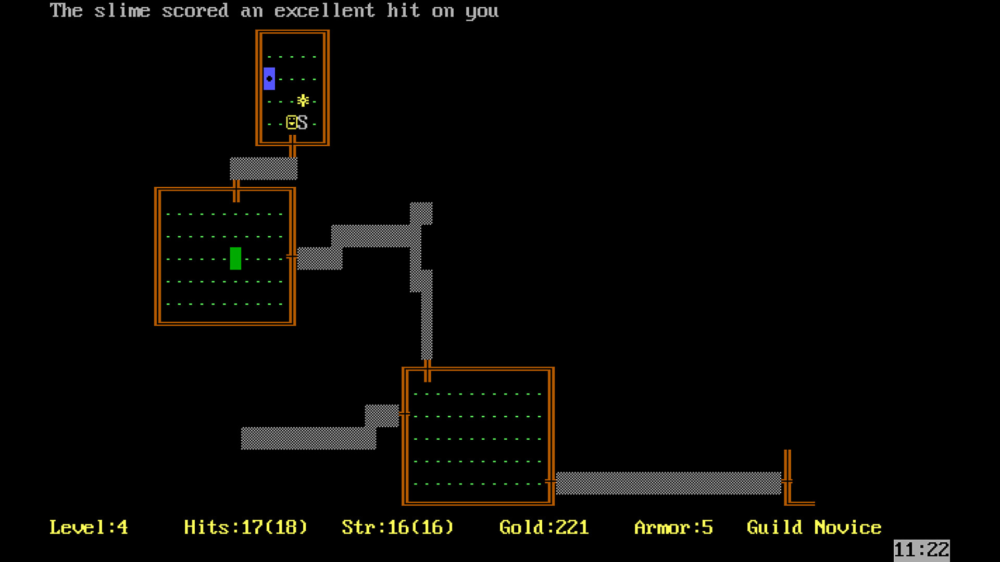

So What is a Roguelite Anyway?
Joel Haddock Mar 11, 2024
The term "roguelite" gets tossed around a lot.
For as long as it's been around*, people have disagreed on quite what exactly it means. That's given a lot of room to us it on almost anything anybody wants to.
To add to the confusion, there's the much older idea of the "roguelike", and sometimes people use them interchangeably out of confusion.
I'm not going to pretend I'm going to create the end-all be-all definition of the term here, but I will define what it means to me. Because, frankly, I don't need you to care about the full taxonomical details, I'm just here to convince you they are great.
Like vs Lite
"Roguelikes", as the term implies, are games that are like Rogue. Rogue was a game from 1980 that had a player leading a single character deep into a random dungeon full of brutal creatures and traps.
The originator
What made Rogue unique was its concept of permadeath. Once your character was defeated in the dungeon (which would happen a lot), they were gone forever. This made every run a delicate, dangerous balance of risk reward as all of your progress could be erased by a single misstep.
So, key things about roguelikes: permadeath, turn-based dungeon crawler, extreme difficulty, random content generation.
There are certainly other factors you could consider there, but to me those are the keys.
So what makes a roguelike into a roguelite, instead?
Some people would say roguelites are just games form different genres that have the roguelike ideals projected onto them. I think that's correct, to a point, but there is a bigger piece: meta-progression.
Make Mine Meta
So what's meta-progression?
In the most basic terms, the meta-progression is when progress through an individual run provides some sort of long-term growth that will make subsequent runs different.

Finding new ships in FTL
This usually takes the form of unlocking new abilities or powers provide a player more options for moving through runs. In Hades, for example, regardless of whether you win or lose a run, the player comes back with resources to spend on unlocking new powers or modifiers. In Slay the Spire, your options grow more powerful as each run unlocks more and more cards.
So yes, roguelites are a much broader world than traditional roguelikes. And sometimes it's easy to see a hint of Rogue mechanics in something and declare it a roguelite. There are even people who think roguelite as a term shouldn't even exist on its own.
It's incredibly easy to get into an argument on the internet about it - but that's not the important part.
The important part is playing the games. Diving into a run, regardless of whether it's a dungeon or a castle or a platformer, having fun, losing, and then having more fun.
So What Is This?
Welcome to the Roguelite House, the place for all things roguelite.
If you don't know what a roguelite is, you should probably start here.
What're We Running Now?
- Balatro
- Loop Hero
Latest Posts
-
What Is A Roguelite?
Maybe you should start here.
-
Hades
Hades is the best Roguelite
-
Slay the Spire
Slay the Spire is the best Roguelite